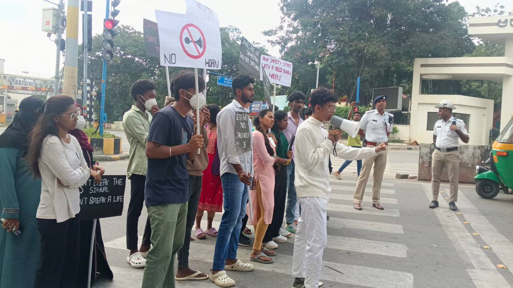
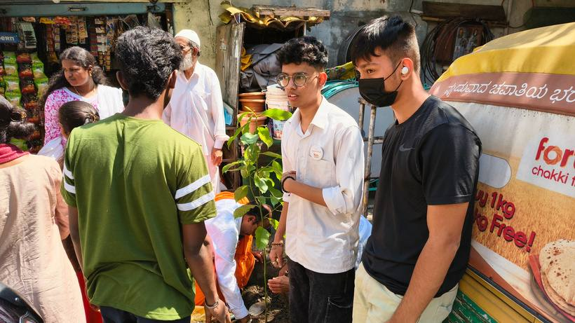
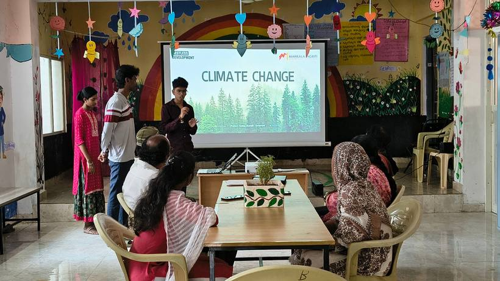

What young people were up against
Shopkeepers knew plastic was harmful but kept using it: there was no enforcement and no cheap alternative. In Ward 96, households saw waste as the government's problem, leaving sanitation workers to sort mixed, hazardous waste by hand.
What the grant made possible
Young people became the link between residents, businesses and the city. They combined education, enforcement with BBMP marshals and practical alternatives such as paper bags, and won support from local political leaders.
Shops: awareness, enforcement and an alternative
The team visited shopkeepers to talk through the health and environmental costs of plastic, then worked with the Greater Bengaluru Authority so BBMP marshals backed the message with fines. Hands-on paper-bag workshops gave vendors a simple, low-cost alternative. The Vice President of the Gandhinagara Block called it a model for how communities can tackle climate challenges.
A school: a zero-plastic zone
At Bapuji School, demonstration classes and a paper-bag workshop turned students from consumers into makers. Three new waste bins backed up the lessons, and the habits spread from classrooms to teachers' and parents' homes.
A ward: dignity for sanitation workers
In Ward 96, Okalipuram, a door-to-door campaign explained why segregation matters, including for the safety of the workers who handle the waste. Clean-up drives and wall murals reclaimed neglected spaces. The Karnataka Health Minister formally recognised the work, honouring the ward's sanitation workers.
A neighbourhood: from garbage block to garden
Residents like Nandhini volunteered alongside young people to clear neglected blocks. A community terrace garden, where residents grow vegetables for daily use, became a shared source of pride and a reason to keep the streets clean.
“Change begins when ordinary citizens and local leaders become champions of sustainability.”Makkala Jagriti climate change team